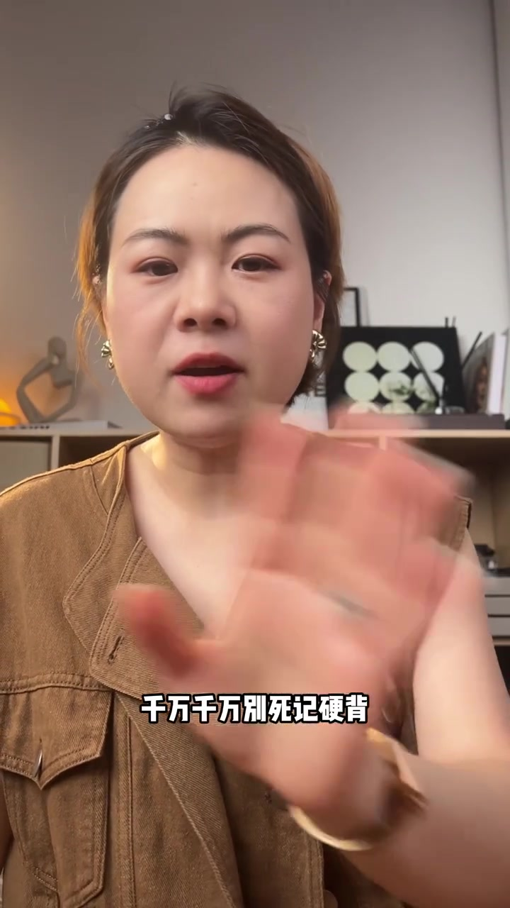
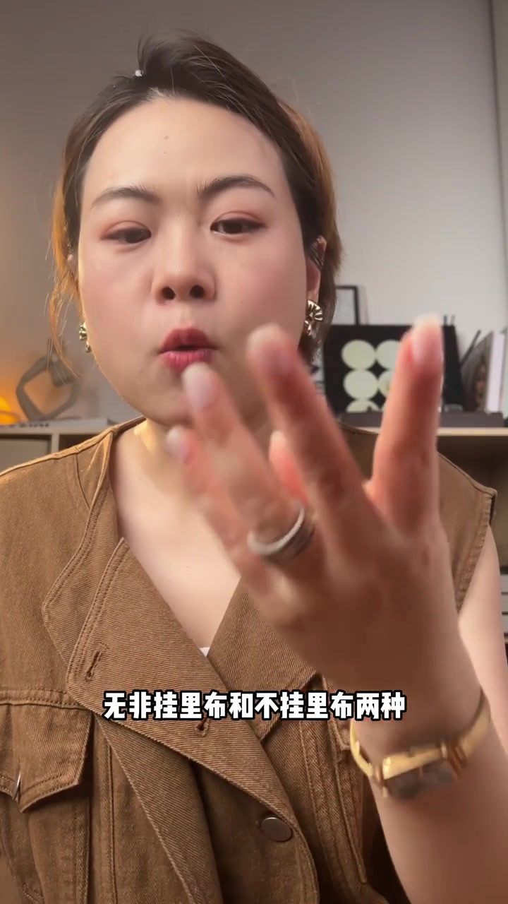
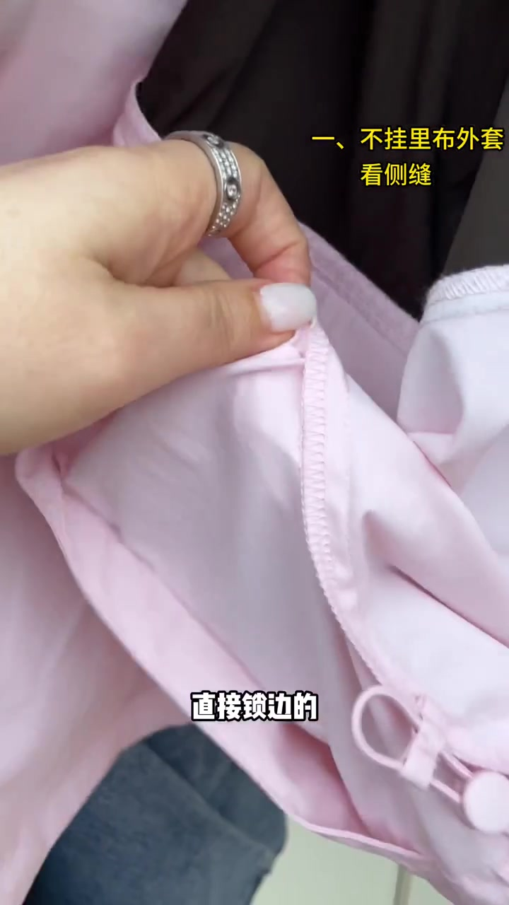
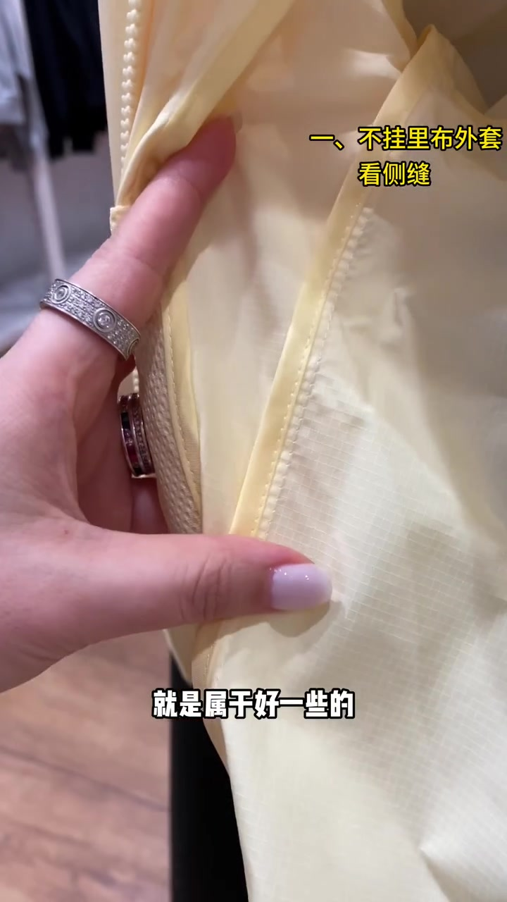
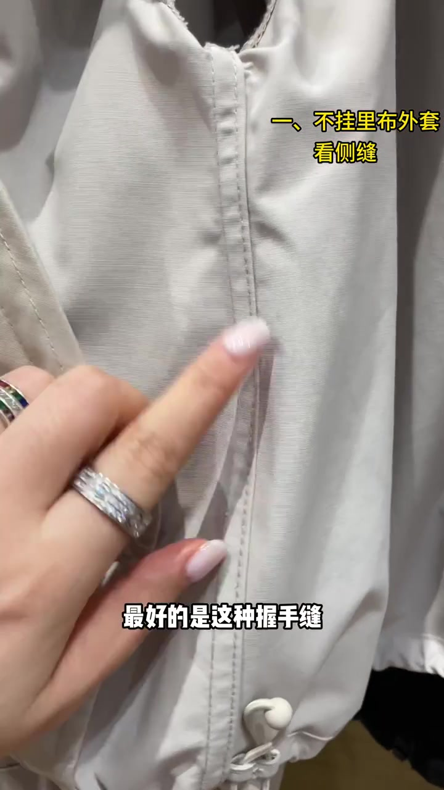
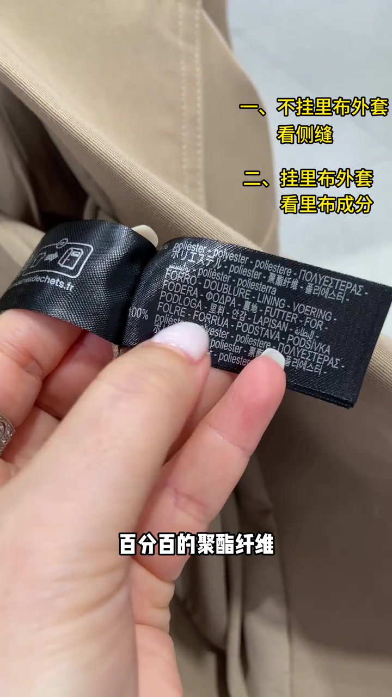
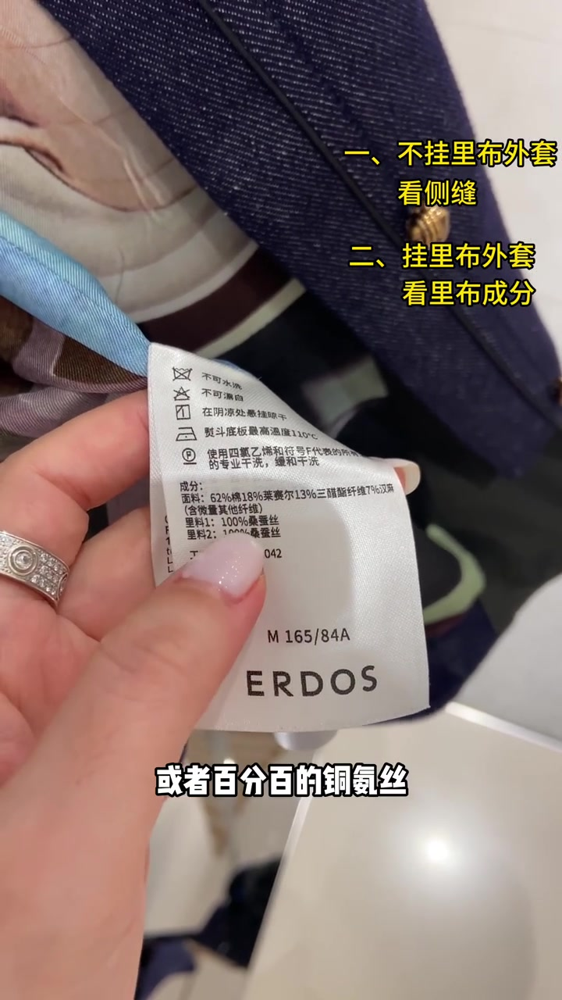

00:00–00:21
开场：看了很多期，进店却一片空白
主讲人先点破常见困境：看了很多期“如何挑衣服”视频，感觉好像会了，真正自己买、自己挑时脑子却一片空白。
对策说得很硬——挑衣服一定要学思路，千万千万别死记硬背。今天只教一招，让脑子留下深刻印象；正值秋天，大家多半会买外套，于是整条演示就以外套为例。
可见字幕校正：Whisper 将“死记硬背”听成“死机硬背”。下文按画面字幕叙述，文末转录区仍保留原始分段。
[00:02] 开场点题：看了很多期挑衣服视频，仍觉得没真正学会。
Opening titles the theme: after many clothing-picking videos, still feeling you haven't really learned.

[00:15] 核心提醒叠字出现：千万千万别死记硬背，要学思路。
A core reminder overlay appears: never, ever memorize by rote — learn the thinking.
00:21–00:35
外套只分两类：挂里布 / 不挂里布
外套被收成两种：挂里布的，和不挂里布的。不管哪一种，只要记住一个点，就能一眼辨好坏——后面两段分别把这个“点”落到侧缝与成分标上。
字幕校正：Whisper 把“挂里布”听成“挂礼布”，“一眼辨好坏”听成“一眼便好坏”。画面叠字为“一眼辨好坏”。

[00:28] 分类落地：外套无非挂里布与不挂里布两种。
Categorization lands: jackets either have a hanging lining or they don't.
00:35–00:51
不挂里布：直接看侧缝这条线
先看不挂里布的外套——镜头贴近内里，手指钉住侧缝。直接锁边的，被判为最基础、最差；侧缝做成包边处理的，属于好一些；最好的是握手缝，还有来去缝。
黄字叠标始终写着“一、不挂里布外套 看侧缝”，把三类工艺排成递进档位，而不是零散术语清单。
画面字幕原文即写“握手缝”；叙述保留视频用语，同时可理解为封闭毛边的高级缝合（与来去缝并列的顶档）。

[00:41] 差样：不挂里布外套侧缝直接锁边，被判最基础最差。
Bad sample: a jacket without hanging lining has its side seams merely overlocked — judged the most basic and worst.

[00:47] 中档：侧缝包边处理，属于好一些的做工。
Mid-tier: bound side seams — noticeably better workmanship.

[00:48] 顶档：握手缝（并提到来去缝）作为不挂里布侧缝的最好参照。
Top tier: hand-felled seams (also mentioning French seams) as the best reference for unlined side seams.
00:51–01:25
挂里布：翻开洗水标，只看里布成分
话题切到挂里布外套：直接看里布成分，洗水标上都会有标注。示范件一：百分百聚酯纤维——最差，因为稍微摩擦就容易起静电，穿上极其不舒服。
示范件二：里布百分百棉，或者棉混纺、混合类——属于基础档，理由是吸湿透气、舒适度高、抗静电。
示范件三：里布百分百桑蚕丝，或百分百铜氨丝——主讲人断言，这一件在版型与工艺方面“肯定都是最好的”。镜头收在 ERDOS 吊牌与花色内里上，黄字第二行写着“二、挂里布外套 看里布成分”。
字幕校正：Whisper 将“洗水标 / 聚酯纤维 / 起静电 / 棉混纺 / 抗静电 / 桑蚕丝 / 铜氨丝 / 版型”分别听成“水几标 / 锯纸纤维 / 起进垫 / 棉混防 / 抗净垫 / 桑残丝 / 铜安丝 / 板型”。成分与护理信息以吊牌画面为准。

[00:58] 避雷样：里布 100% 聚酯纤维，易起静电、不舒服。
Avoid sample: a 100% polyester lining — staticky and uncomfortable.

[01:18] 顶档样：里料 100% 桑蚕丝（并提铜氨丝），被判版型与工艺最好。
Top-tier sample: 100% mulberry-silk lining (also mentioning cupro) — judged best in cut and craft.